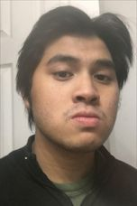
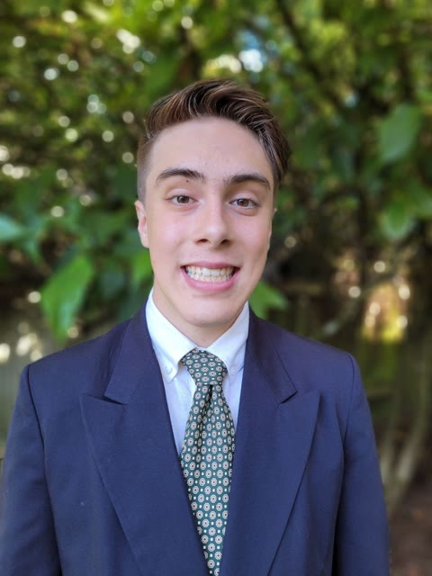

Meet the Team
Jordan Kemelhar
Jordan Kemelhar is a senior Computer Science student at Old Dominion University and an IT/Azure cloud professional with a cybersecurity certification. Jordan has experience in Java and Azure user management, and enjoys video games, hiking, and board games.
- Phone: 540-908-1126
- Email: jkeme002@odu.edu
- Discord: pizzaguy8812
- GitHub: PizzaGuy665

Justin Tendilla
Justin Tendilla is a Computer Science student at Old Dominion University. Justin has experience in C++ and Java, and enjoys playing guitar, video games, and movies.
- Phone: 757-839-0937
- Email: jtend002@odu.edu
- Discord: es355q
- GitHub: jtend-002
Darius Itam
Darius Itam is a senior in the Computer Science bachelor's program at Old Dominion University's main campus in Norfolk, Virginia. Darius is proficient in Python, Java, JavaScript, and C#, and enjoys fitness, esports, and music.
- Phone: 804-638-4860
- Email: ditam001@odu.edu
- Discord: rexhappy
- GitHub: dariusI001
Aaditya Ghimire
Aaditya Ghimire is a Computer Science student at Old Dominion University. Aaditya has experience in Java and Spring Boot, with a main focus on Python and deep learning for computer vision.
- Phone: 571-466-6670
- Email: aghim003@odu.edu
- Discord: aadituh
- GitHub: aadituh

Spencer Peloquin
Spencer Peloquin is enrolled in the BS/MS Computer Science program at Old Dominion University and has completed a technical internship at Tacoma Public Utilities. Spencer has experience in Python, Java, Ruby, C++, C#, SQL, and Fortran, lives in Tacoma, Washington, and enjoys running, reading, and hiking.
- Phone: 253-381-1652
- Email: spelo001@odu.edu
- Discord: niiue064
- GitHub: terrasky064